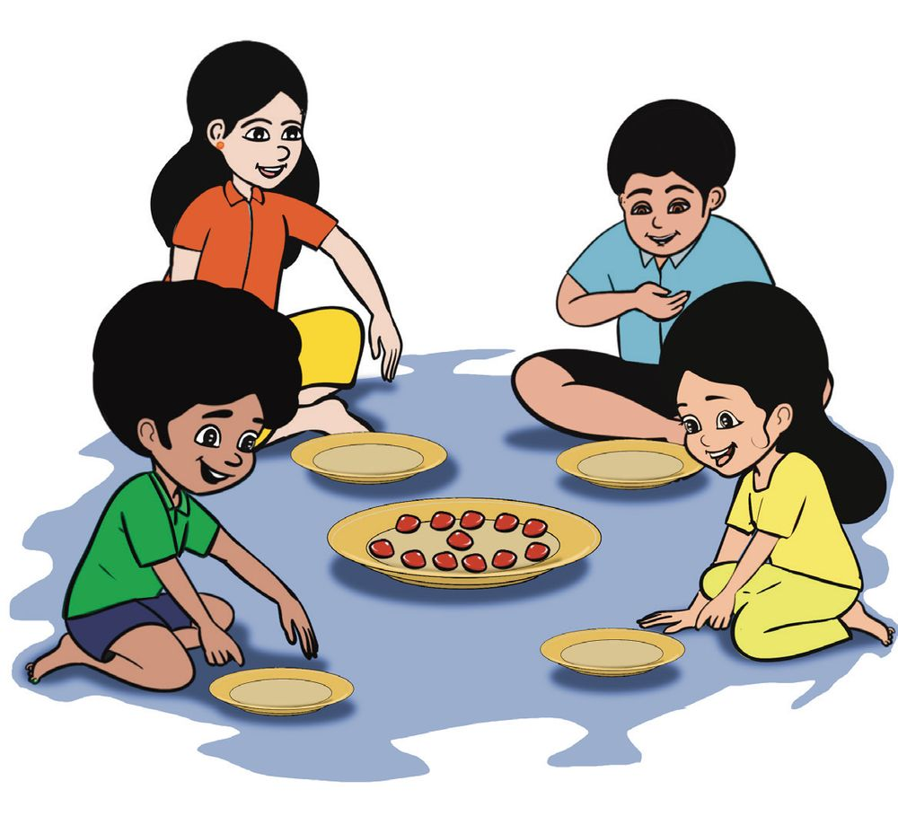
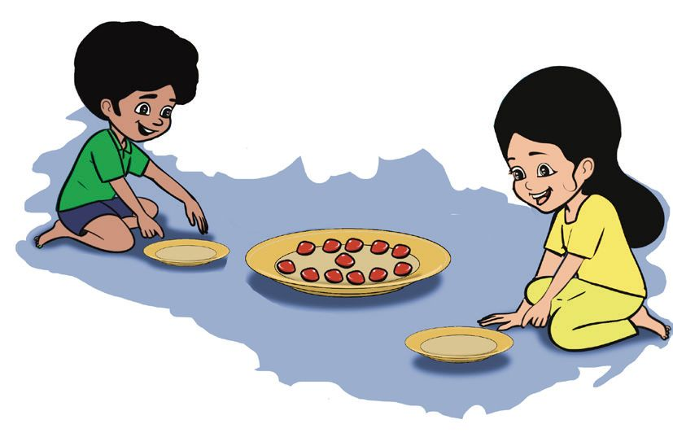
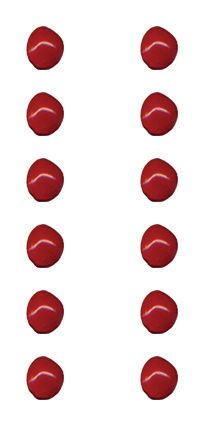
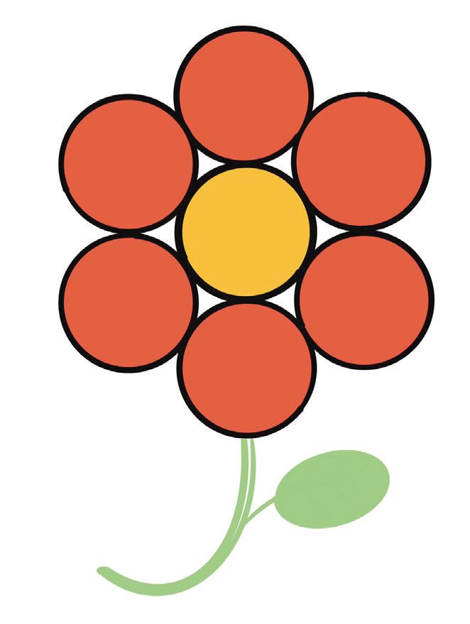
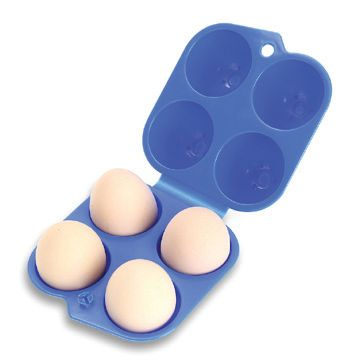

10
പങ്കുവയ്കക്കകാം


10
പങ്കുവയ്കക്കകാം


ഗണിതം സ്റ്റാൻഡേർഡ് - III
ഒത്തു നിൽക്കാം കൂട്ടരേ... നമുക്ക് 'ഒത്തു നിൽക്കാം കൂട്ടരേ' എന്ന കളി കളിക്കാം.
അജലിന്റെ ക്ലാസിലെ 20 കുട്ടികൾ ഈ കളി കളിച്ചു. • 5 പേർ എന്നു പറഞ്ഞപ്പപോൾ എത്ര കൂട്ടങ്ങൾ ആയി ? 4 × 5 = 20 • 4 പേർ എന്നു പറഞ്ഞപ്പപോൾ എത്ര കൂട്ടങ്ങൾ ആയി ? 5 × 4 = 20
• 2 പേർ വീതമുള്ള കൂട്ടങ്ങളായാലോോ ? 10 × 2 = 20
146
20 ൽ 5 ന്റെ
4 കൂട്ടങ്ങൾ


പങ്കുവയ്കക്കകാം
• ഏറ്റവും കൂടുതൽ കൂട്ടങ്ങൾ ആയത് ഏത് സംഖ്യ പറഞ്ഞപ്പപോഴാണ് ? എത്ര കൂട്ടങ്ങൾ ? 2 × 10 = 20
• 10 എന്നു പറഞ്ഞപ്പപോഴോോ ?
ആകെ കുട്ടികൾ
ഒരു കൂട്ടത്തിലെ കുട്ടികളുടെ എണ്ണം
കൂട്ടങ്ങളുടെ എണ്ണം
20
5
4
20 20
5 2
20
ചക്കരമാവ് സ്കൂൾ മുറ്റത്തെ ചക്കരമാവ് കണ്ടില്ലേ. കാറ്റത്ത് ധാരാളം മാങ്ങ താഴെ വീണു. അജലും കൂട്ടുകാരും മാങ്ങ പെറുക്കി എടുത്തു. •
16 പഴുത്തമാങ്ങ
•
28 പച്ചമാങ്ങ
•
36 കണ്ണിമാങ്ങ
അജലിന്റെ സ്കൂളിൽ 4 ക്ലാസു കളാണ് ഉള്ളത്.
147

ഗണിതം സ്റ്റാൻഡേർഡ് - III
പഴുത്ത മാങ്ങകളും പച്ചമാങ്ങകളും നാല് ക്ലാസിലേക്ക് തുല്യമായി കൊൊടുത്തു. പഴുത്തമാങ്ങകൾ കൂട്ടങ്ങളാക്കൂ... നിറം കൊൊടുക്കൂ.
പച്ചമാങ്ങകൾ കൂട്ടങ്ങളാക്കൂ... നിറം കൊൊടുക്കൂ.
ക്ലാസ് 1
ക്ലാസ് 2
ക്ലാസ് 1
ക്ലാസ് 2
ക്ലാസ് 3
ക്ലാസ് 4
ക്ലാസ് 3
ക്ലാസ് 4
ഈ കൂട്ടത്തിലെത്ര ?
ഈ കൂട്ടത്തിലെത്ര ?
4 × 4 = 16
7 × 4 = 28
കണ്ണിമാങ്ങകൾ അജലും 5 കൂട്ടുകാരും കൂടി വീതിച്ചെടുത്തു. കണ്ണിമാങ്ങകൾ കൂട്ടങ്ങളാക്കൂ, നിറം കൊൊടുക്കൂ.
എത്ര കൂട്ടങ്ങൾ ?
ഒരു കൂട്ടത്തിലെത്ര ? 148
....... × ...... = 36



പങ്കുവയ്കക്കകാം
മഞ്ചാടിക്കളി 'കണക്കുപെട്ടി 'യിലേക്കാവശ്യമായ മഞ്ചാടികൾ പെറുക്കുന്നതിനായി അജലും കൂട്ടുകാരും സ്കൂൾ മുറ്റത്തെ മഞ്ചാടി മരത്തിനരികിലെത്തി. എനിക്ക് 12 എണ്ണം കിട്ടി.
ഒരേ പോോലെ വീതിച്ചാലോോ ?
പാത്രത്തിൽ ആകെ 12 മഞ്ചാടി. അഭിനയ ഒരു മഞ്ചാടി വീതം ഓരോോരുത്തർക്കും കൊൊടുത്തു. ഒരു തവണ കൊൊടുത്തപ്പപോൾ ബാക്കി വന്നത് 12 – 4 = 8 രണ്ടു തവണ കൊൊടുത്തപ്പപോൾ ബാക്കി വന്നത് 8 – 4 = 4 മൂന്നു തവണ കൊൊടുത്തപ്പപോൾ ബാക്കി വന്നത് 4 – 4 = 0 മൂന്നു തവണ യല്ലേ വീതം വച്ചത്.
ആകെയുണ്ടായിരുന്ന മഞ്ചാടി എത്ര പേർക്കാണ് വീതിച്ചത് ? ഒരാൾക്ക് എത്ര കിട്ടി ?
.......... × .......... = 12
12 മഞ്ചാടി 4 പേർക്ക് തുല്യമായി വീതിച്ചാൽ ഓരോോരുത്തർക്കും 3 മഞ്ചാടി വീതം കിട്ടും.
149



ഗണിതം സ്റ്റാൻഡേർഡ് - III
12 മഞ്ചാടി 3 പേർക്ക്
തുല്യമായി വീതിച്ചാലോോ ? ഒരു തവണ കൊൊടുത്തപ്പപോൾ ബാക്കി വന്നത് 12 – 3 = 9 2 തവണ കൊൊടുത്തപ്പപോൾ ബാക്കി വന്നത് ................ 3 തവണ കൊൊടുത്തപ്പപോൾ ബാക്കി വന്നത് ................ 4 തവണ കൊൊടുത്തപ്പപോൾ ബാക്കി വന്നത് ................ ആകെയുണ്ടായിരുന്ന മഞ്ചാടി എത്ര പേർക്കാണ് വീതിച്ചത് ? ഒരാൾക്ക് കിട്ടിയ എണ്ണം ?
.......... × .......... = 12
12 മഞ്ചാടി 2 പേർക്ക് തുല്യമായി
വീതിച്ചാലോോ ? ഒരു തവണ കൊൊടുത്തപ്പോോൾ ബാക്കി വന്നത് ................ 2 തവണ കൊൊടുത്തപ്പോോൾ ബാക്കി വന്നത് ................ 3 തവണ കൊൊടുത്തപ്പോോൾ ബാക്കി വന്നത് ...............................................................
....................................................................................................................................................... ....................................................................................................................................................... ....................................................................................................................................................... ആകെയുണ്ടായിരുന്ന മഞ്ചാടി എത്ര പേർക്കാണ് വീതിച്ചത് ? ഒരാൾക്ക് കിട്ടിയ എണ്ണം ?
.......... × .......... = 12
150



പങ്കുവയ്കക്കകാം
12 മഞ്ചാടി 2 പേർക്ക് തുല്യമായി വീതിച്ചപ്പപോൾ ഓരോോരുത്തർക്കും 6 എണ്ണം വീതം കിട്ടി. 12 നെ ഒരേ എണ്ണമുള്ള 4 കൂട്ടമാക്കിയാൽ ഓരോോ കൂട്ടത്തിലും 3 എണ്ണം. 12 നെ ഒരേ എണ്ണമുള്ള 3 കൂട്ടമാക്കിയാൽ ഓരോോ കൂട്ടത്തിലും എത്ര ? 12 മഞ്ചാടി ഒരേ എണ്ണമുള്ള 2 കൂട്ടമാക്കിയാൽ
ഓരോോ കൂട്ടത്തിലും 6 എണ്ണം.
12 നെ ഒരു പോോലുള്ള 2 കൂട്ടമാക്കിയാൽ ഓരോോ കൂട്ടത്തിലും 6. 12 നെ രണ്ടു തുല്യ ഭാഗമാക്കിയാൽ ഓരോോ ഭാഗത്തിലും 6. 12 നെ രണ്ടായി വീതിച്ചാൽ ഓരോോന്നിലും 6. 12 നെ 2 കൊൊണ്ടു ഹരിച്ചാൽ 6 എന്ന് പറയാം.
ചിഹ്നം ഉപയോോഗിച്ച് 12 ÷ 2 = 6 എന്നെഴുതാം. 12 ÷ 2 = 6
ഇതിനെ 12 ഭാഗം 2 സമം 6 എന്നും വായിക്കാം. 12 മഞ്ചാടി ഒരേ എണ്ണമുള്ള 3 കൂട്ടങ്ങളാക്കിയാൽ
ഓരോോ കൂട്ടത്തിലും 4 എണ്ണം.
151

ഗണിതം സ്റ്റാൻഡേർഡ് - III
12 നെ ഒരുപോോലുള്ള 3 കൂട്ടമാക്കിയാൽ ഓരോോ കൂട്ടത്തിലും 4.
അതായത് 12 നെ 3 കൊൊണ്ട് ഹരിച്ചാൽ 4. 12 ഭാഗം 3 സമം 4 12 ÷ 3 = 4
3 × 4 = 12
12 മഞ്ചാടി ഒരേ എണ്ണമുള്ള 4 കൂട്ടമാക്കിയാൽ 12 ഭാഗം 4 സമം 3 12 ÷ 4 = 3
4 × 3 = 12
12 മഞ്ചാടി ഒരേ എണ്ണമുള്ള 6 കൂട്ടമാക്കിയാൽ 12 ഭാഗം 6 സമം ........ ........ ÷ ........ = ........
.... × .... = 12
എഴുതി നോോക്കൂ... സന്ദർഭം
ഗണിതക്രിയ
12 മഞ്ചാടി 2 പേർക്ക്
12 എണ്ണത്തിനെ ഒരേ
തുല്യമായി വീതിച്ചു.
പോോലെയുള്ള 2 കൂട്ടമാക്കി.
12 മഞ്ചാടി 4
ഗണിതരൂപം 12 നെ
2 കൊൊണ്ട്
12 ÷ 2 = 6
ഹരിച്ചു.
12 ÷ 4 = 3
പേർക്ക് തുല്യമായി വീതിച്ചു. 12 എണ്ണത്തിനെ ഒരേ പോോലെയുള്ള 3 കൂട്ടമാക്കി
152



പങ്കുവയ്കക്കകാം
പട്ടിക പൂർത്തിയാക്കൂ. സന്ദർഭം 6 മിഠായി 2 പേർക്ക്
തുല്യമായി വീതിച്ചു.
ഗണിതക്രിയ 6 എണ്ണത്തിനെ ഒരേ പോോലെയുള്ള 2 കൂട്ടമാക്കി.
ഗണിതരൂപം 6 നെ 2 കൊൊണ്ട് 6 ÷ 2 = 3 ഹരിച്ചു.
16 പെൻസിൽ 4 കുട്ടികൾക്ക് ഒരുപോോലെ കൊൊടുത്തു. 18 പേന 6 പേർക്ക് ഒരേ എണ്ണം വീതം കൊൊടുത്തു.
പൂക്കളുണ്ടാക്കാം മികവുത്സവത്തിന് സ്റ്റേജ് അലങ്കരിക്കാൻ പൂക്കൾ ഉണ്ടാക്കുകയാണ് അജലും കൂട്ടു കാരും. 7 വട്ടം വച്ച് ഒരു പൂവ് ഉണ്ടാക്കണം. അജലിന്റെ ഗ്രൂപ്പിന് 21 വട്ടം കിട്ടി. അവർക്ക് എത്ര പൂക്കളുണ്ടാക്കാം ?
• 35 വട്ടങ്ങളാണ് അഭിനയയുടെ സംഘത്തിന് കിട്ടിയത്.
അവർക്ക് എത്ര പൂക്കൾ ഉണ്ടാക്കാം ? • 28 വട്ടം കിട്ടിയാൽ എത്ര പൂക്കൾ ഉണ്ടാക്കാം ?
153
.... × .... = 35




ഗണിതം സ്റ്റാൻഡേർഡ് - III
പൂക്കളുടെ എണ്ണം കിട്ടിയ ഒരു പൂവ് ഗ്രൂപ്പ് വട്ടത്തിന്റെ ഉണ്ടാക്കാൻ എണ്ണം വേണ്ട വട്ടം 1
21
7
2
35
7
3
28
7
4
70
7
5
14
7
ക്രിയ
പൂക്കളുടെ എണ്ണം
21 ÷ 7 = 3
3
• 63 ÷ 7 = 9 എന്ന ക്രിയയെ ഒരു ചോോദ്യമായി എഴുതാമോോ ?
എത്ര മുട്ടത്തട്ടുകൾ ?
• അജലിന്റെ അച്ഛന്റെ കടയിൽ രണ്ടുതരം മുട്ടത്തട്ടുകൾ ഉണ്ട്. ഒന്നാമത്തേതിൽ 4 മുട്ട വീതവും രണ്ടാമത്തേതിൽ 6 മുട്ട വീതവും വയ്കക്കകാം. 24 മുട്ട വയ്ക്കാൻ എത്ര തട്ട് വേണം ? 4 മുട്ടവയ്ക്കുന്ന തട്ടാണെങ്കിൽ
6 മുട്ടവയ്ക്കുന്ന തട്ടാണെങ്കിൽ
154

പങ്കുവയ്കക്കകാം
പട്ടിക നോോക്കൂ. 6 × 4 = 24
24 ÷ 4 = 6 24 ÷ 6 = 4
പൂർത്തിയാക്കൂ. ......................
56 ÷ 7 = 8 7 × 8 = 56
9 × 4 = 36 ......................
......................
......................
......................
6 × 5 = 30
8 × 4 = 32 ......................
...................... 18 ÷ 6 = 3
6 × 3 = 18
18 ÷ 3 = 6 8 × 3 = 24
24 ÷ 3 = 8
9 × 6 = 54
36 ÷ 9 = 4
155


ഗണിതം സ്റ്റാൻഡേർഡ് - III
അടുക്കളത്തതോട്ടം
സ്കൂളിലെ അടുക്കളത്തതോട്ടത്തിലേക്ക് 45 ചട്ടിയിലായി തൈകൾ കൊൊണ്ടുവ ന്നു. അഞ്ച് വരിയിലായാണ് ചട്ടികൾ വച്ചത്. ഒരു വരിയിൽ എത്ര ചട്ടികൾ ? 45 എണ്ണത്തെ
5 തുല്യഭാഗമാക്കിയാൽ ഒരു ഭാഗം 45 നെ 5 കൊൊണ്ടു ഹരിച്ചാൽ 45 ÷ 5 =
156
.......... × .......... = 45

പങ്കുവയ്കക്കകാം
സ്കൂൾ പാർക്കിലെ തീവണ്ടി അജലിന്റെ സ്കൂളിലെ പ്രീപ്രൈമറിയിൽ 32 കുട്ടികളുണ്ട്. സ്കൂൾ പാർക്കിലെ തീവണ്ടിയിൽ 4 ബോോഗിയാണുള്ളത്. ഓരോോ ബോോഗിയിലും ഒരേ എണ്ണം കുട്ടികളാണ് കയറുന്നതെങ്കിൽ ഒരു ബോോഗിയിൽ എത്ര കുട്ടികൾക്ക് കയറാം ? ÷
=
കളിവണ്ടി അജലിന്റെ ക്ലാസിലെ 18 കുട്ടികൾ പാർക്കിലെ കളിവണ്ടിയിൽ കയറാൻ പോോയി. ഒരു വണ്ടിയിൽ 3 പേർക്ക് കയറാം. ഒരേ സമയം എല്ലാവർക്കും കയറണമെങ്കിൽ എത്ര കളിവണ്ടി വേണം ? ÷
=
2 പേർ വീതം കയറുന്ന കളിവണ്ടിയാണെങ്കിലോോ ? ÷
=
കളിച്ച് ജയിക്കൂ... പേജ് 145 ൽ കൊൊടുത്തിരിക്കുന്ന ഏണിയും പാമ്പും ബോോർഡ് നോോക്കൂ... • ആദ്യയം 1 എഴുതിയ കളത്തിൽ നിന്ന് തുടങ്ങണം. • ഏണിയിൽ കയറിയും പാമ്പിൽ ഇറങ്ങിയും കളിക്കണം. • ചില കളങ്ങളിൽ ക്രിയ നൽകിയിട്ടുണ്ട്. ഉത്തരമുള്ള കളത്തിലേക്ക് ബട്ടൺ നീക്കി വയ്ക്കണം. • ആദ്യയം 100 ൽ എത്തുന്ന ആളാണ് വിജയി.
157


ഗണിതം സ്റ്റാൻഡേർഡ് - III
വിലയിരുത്തൽ പ്രവർത്തനങ്ങൾ 1.
എത്രമിഠായി ? 15 മിഠായി 3 കുട്ടികൾക്ക് തുല്യമായി കൊൊടുത്താൽ ഒരു കുട്ടിക്ക് എത്ര മിഠായി കിട്ടും ?
2.
ക്ലാസിലെ ബെഞ്ച് ഷിയാൻ്റെ ക്ലാസിൽ 28 കുട്ടികൾ ഉണ്ട്. ഒരു ബെഞ്ചിൽ 4 പേർ വീതമാണ് ഇരിക്കുന്നത്. ക്ലാസ്സിൽ എത്ര ബെഞ്ചുണ്ട് ?
3. നോോട്ടും നാണയവും
ഒരു 50 രൂപ നോോട്ട്, 5 രൂപ നാണയങ്ങളാക്കി മാറ്റിയാൽ എത്ര നാണയം കിട്ടും ? • 4.
10 രൂപ വീതം എത്ര പേർക്ക് കൊൊടുക്കാം ?
വരിയും നിരയും 81 കുട്ടികളെ വരിയിലും നിരയിലും ഒരേ എണ്ണം വരുന്ന വിധം
നിർത്തി. •
വരിയിൽ എത്ര കുട്ടികൾ ?
•
നിരയിൽ എത്ര കുട്ടികൾ ?
5.
മാന്ത്രികപ്പെട്ടി
മാന്ത്രികപ്പെട്ടിയിൽ ഏതുസാധനം ഇട്ടാലും ഓരോോ മിനിറ്റ് കഴിയു മ്പപോഴും അതിന്റെ ഇരട്ടിയോോട് 1 കൂടിക്കകൊണ്ടിരിക്കും. ഒരു മിഠായി പെട്ടിയിലിട്ട് 4 മിനിറ്റ് കഴിഞ്ഞപ്പപോൾ 31 മിഠായി ആയി. 3 മിനിറ്റ് കഴിഞ്ഞപ്പപോൾ പെട്ടിയിൽ എത്ര മിഠായി ഉണ്ടായിരുന്നു ?
158